Die Tagebücher von Andreas Okopenko (1949–1954)
Table of Contents
Abstract
The publication of Andreas Okopenko’s diaries from 1949 to 1954 is a digital edition that includes carefully transcribed diary entries with thoughtful and transparent, although not always easily accessible, editing guidelines. The presentation of the digital edition offers engagement with the contents in different ways, whether reading the diaries in chronological order or exploring them through linked data and indexes, but a full-text search is missing. The research data collected is enriched with metadata and available for subsequent use in a repository in the form of TEI-XML files and with an open license. Although API exists, the generated research data is not yet fully integrated in the overarching infrastructure for digital editions at the Austrian National Library (ÖNB). The project took a hybrid approach and published a printed edition subsequently, which, curiously, covers a longer period than the digital edition. The website, however, lacks information on whether there will be published more diaries in the future.
Einleitung
Andreas Okopenko wurde am 15. März 1930 in Košice geboren († 27. Juni 2010) und emigrierte mit seinen Eltern 1939 nach Wien. Sein Schulbesuch war durch den Zweiten Weltkrieg geprägt, wodurch es zu Unterbrechungen kam, aber schlussendlich schloss er die Schule 1947 mit der Matura ab. Bereits zu Schulzeiten hatte er ein Interesse an Literatur, aber auch für Chemie, und begann 1947 an der Universität Wien Chemie zu studieren. Drei Jahre später brach er das Studium ab, um sich mehr auf seine literarische Tätigkeit und seine Anstellung bei der Papierhandelsgesellschaft Lindner zu konzentrieren. Zu dieser Zeit gab er bereits eine Zeitschrift heraus, verkehrte in literarischen Zirkeln und gründete die Literaturzeitung publikationen einer wiener gruppe junger autoren. Okopenko schrieb zum damaligen Zeitpunkt vor allem Gedichte und Kurzprosa. Die digitale Edition seiner Tagebücher umfasst in etwa diesen Zeitraum, von Dezember 1949 bis Mai 1954. Erst später, ab 1968, gibt er seinen Beruf auf und ist fortan Schriftsteller. Eines seiner bekanntesten Werke ist der experimentelle Lexikon-Roman von 1970. Okopenko hat fast sein ganzes Leben lang Tagebuch geführt (vgl. Herberth 2019). In der digitalen Edition fehlt eine genauere Begründung für die Auswahl des Zeitraums der Tagebücher.
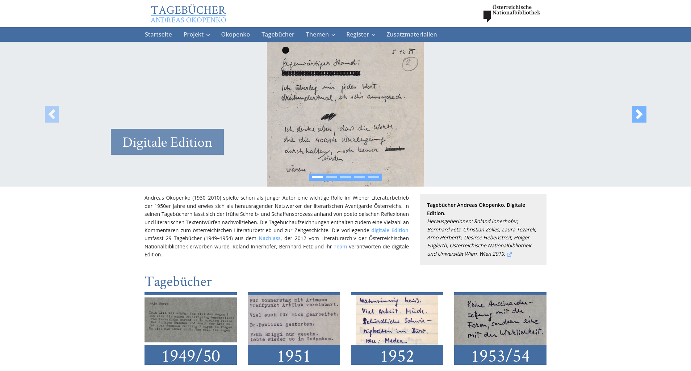
Im Sinne des hybriden Ansatzes ist zusätzlich eine Druckausgabe mit einer Auswahl der Tagebucheinträge im Klever Verlag1 erschienen, die Einträge der Jahre 1945 bis 1949 und 1955 enthält. Die Druckausgabe basiert laut der Einleitung zum Projekt auf den XML-Dateien (vgl. Innerhofer et al. 2019c), die verblüffender Weise nicht in der digitalen Edition verfügbar sind. Die vorliegende Rezension beschäftigt sich mit der digitalen Edition in Version 2.0 vom 21. November 2019. Besonderes Augenmerk liegt auf der Funktionalität und Benutzbarkeit der Weboberfläche, wie auf der Berücksichtigung der FAIR-Prinzipien (Findable, Accessible, Interoperable, Reusable)2 in Hinblick auf die Bereitstellung der Forschungsdaten.
Die Zielgruppe der digitalen Edition umfasst sowohl Wissenschaftler:innen, als auch die interessierte Öffentlichkeit (vgl. Innerhofer u. a. 2019c). Die Hybridedition wurde gewählt, um einerseits technische Möglichkeiten der Digital Humanities zu nutzen, andererseits ein klassisches Lesepublikum zu erreichen (vgl. Innerhofer 2015). Die digitale Edition ist für alle Interessierten frei zugänglich und ist über Suchmaschinen mit Suchbegriffen wie „Okopenko Tagebücher“ oder „Okopenko digital“ einfach auffindbar. Die ÖNB widmet ihren derzeit fünf digitalen Editionen eine eigene Webseite und die Hybridedition ist im hauseigenen Bibliothekskatalog gleichermaßen auffindbar, wie in einschlägigen Editionskatalogen für das Fachpublikum, dem Catalogue of Digital Editions und dem Katalog von Patrick Sahle.
Erschließung der Tagebücher
Die Tagebücher bestehen aus mehreren Heften und Notizbüchern, die zahlreiche lose eingelegte Blätter enthalten, die von Okopenko laut den Bearbeitenden eine feste Ordnung hatten, auch wenn sie nicht explizit nummeriert wurden. Bei diesen Blättern handelt es sich um Tagebucheinträge, Notizzettel, Briefe von Dritten und Zeitungsausschnitte. Die Schriftstücke sind teilweise handschriftlich, teilweise mit Schreibmaschine verfasst (vgl. Innerhofer u. a. 2019c). Die Hefte, Notizbücher und losen Blätter wurden in der Österreichischen Nationalbibliothek, als JPEG2000 mit 300 dpi Auflösung, seitenweise digitalisiert und stehen als Faksimile zur Verfügung (vgl. Innerhofer u. a. 2019b). Insgesamt beinhaltet das Konvolut derzeit 3.097 Scans und 119 Seiten mit Zusatzmaterial (vgl. Innerhofer u. a. 2019a). Das Zusatzmaterial entstand im Rahmen des Bachelors Deutsche Philologie im Proseminar „Okopenko digitized / Digitales Editieren“ am Institut für Germanistik der Universität Wien in sechs Studierendenprojekten (vgl. Innerhofer u. a. 2019e), die eine gute Verbindung von Forschung und Lehre demonstrieren. Von den wissenschaftlichen Mitarbeiter:innen rund um Projektleiter Roland Innerhofer wurden außerdem drei Themenkommentare zur inhaltlichen Erschließung der Konvolute verfasst, die sich mit literarischen Netzwerken, Medien und zeithistorischen Diskursen auseinandersetzen und die Tagebücher kontextualisieren. Sie erzählen Okopenkos Leben in den Jahren 1949 bis 1954 mit zahlreichen Verlinkungen zu den jeweiligen Tagebucheinträgen und bilden einen sehr informativen Einstieg.
Benutzbarkeit und Funktionalität
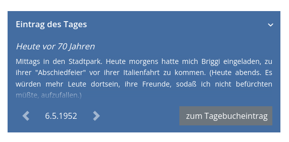
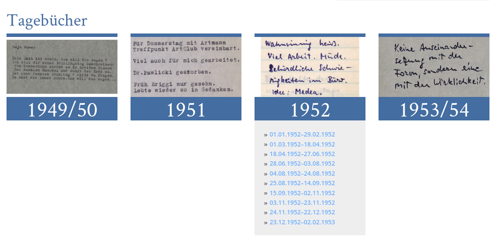
Parallele Ansicht von Faksimile und Transkription
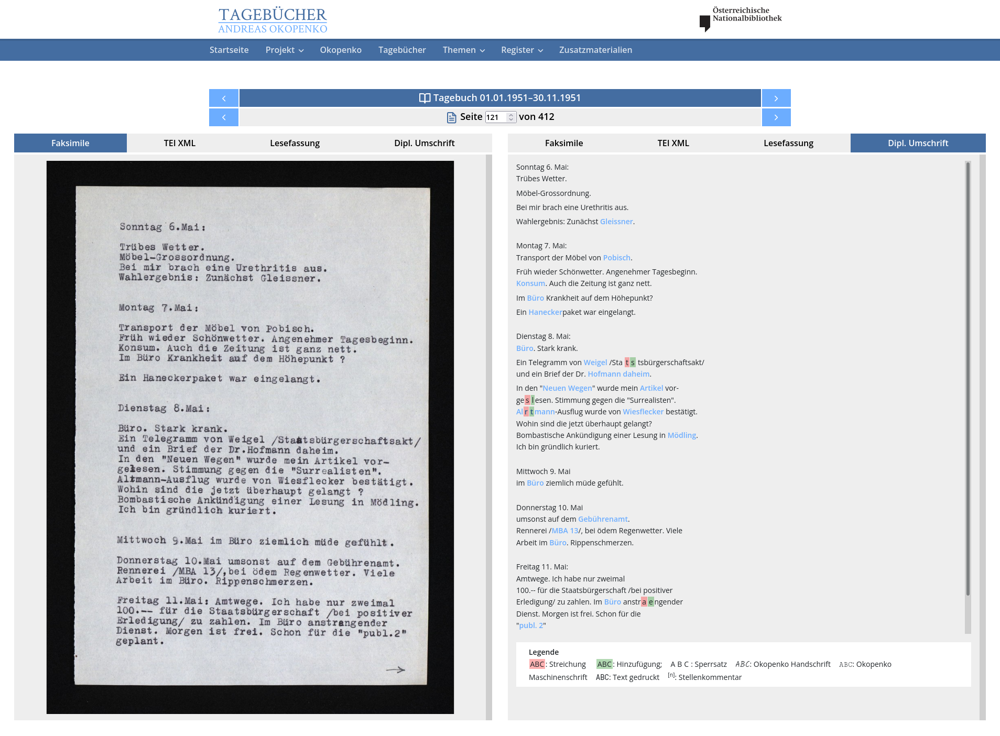 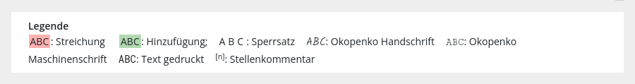
Bild und Text sind nicht in dem Sinne verknüpft, dass die Position des Mauszeigers die entsprechende Stelle oder Zeile am Bild oder im Text hervorhebt, wie es in anderen digitalen Editionen gelegentlich angeboten wird. Die Entscheidung auf diese Funktionalität zu verzichten, ist verschmerzbar, als ein Teil der Texte mit Schreibmaschine verfasst und daher gut lesbar ist. Darüber hinaus ist die Handschrift Okopenkos zumeist leserlich und die Tagebucheinträge sind relativ kurz, sodass sich Leser:innen ohne diese Funktionalität gut im Text zurechtfinden können.
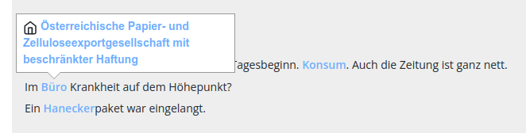
Institutions- und Ortsregister
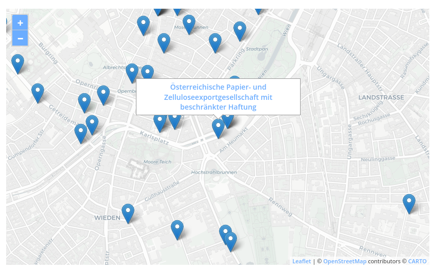
Neben dem Institutionsregister gibt es ein Ortsregister mit weiteren 356 Einträgen, das funktional gleich aufgebaut ist. Beide Register enthalten, neben realen, auch fiktive Einrichtungen und Orte, die beispielsweise in einem Traum oder literarischen Werk vorkommen (vgl. Innerhofer u. a. 2019a). In beiden Registern sind einige Einträge mit den Tags „erwähnt“ und „besucht“ kategorisiert und geben zusätzlichen Kontext zu der jeweiligen Institution oder zu dem jeweiligen Ort. Diese Kategorien werden derzeit nicht für weitere Funktionalitäten innerhalb der digitalen Edition genutzt, wie beispielsweise eine Filterung, und dienen lediglich als Zusatzinformation für die Betrachter:innen. Eine Übersicht darüber, welche Kategorien genutzt und wann sie vergeben werden, gibt es bedauerlicherweise nicht.
Personenregister
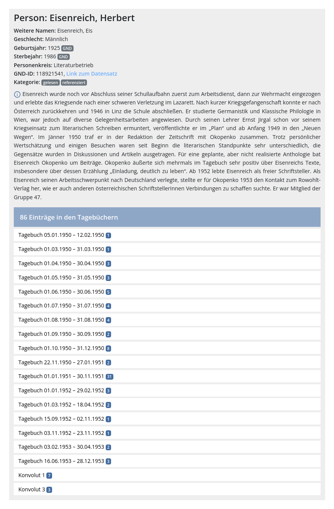
Werkregister
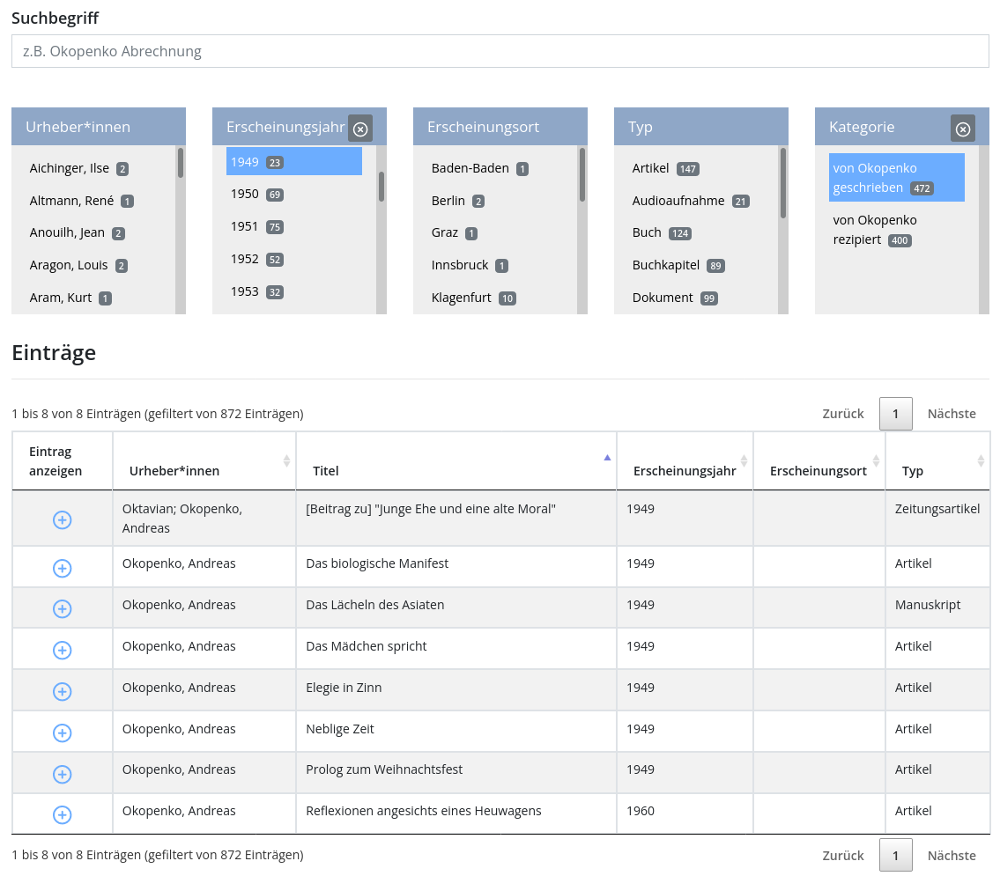
Die Werke haben wie die anderen Register Kategorien wie „gelesen“, „geschrieben“, „übersetzt“ und „referenziert“, können aber trotz der erweiterten Filtermöglichkeiten im Werkregister nicht zur Suche herangezogen werden und eine vollständige Auflistung der verwendeten Kategorien fehlt auch hier. Aufschluss über die genaue Verwendungsweise der Kategorien und welche es gibt, bietet jedoch das XML-Schema4. Zusätzlich ist hier eine detaillierte Beschreibung zum Auswahlverfahren und zur Modellierung der Registereinträge zu finden. Die Darstellung dieser Informationen in der Präsentationsschicht und die Möglichkeit, die Kategorien zur Filterung heranzuziehen, würden diesen Zusatzinformationen einen höheren Stellenwert einräumen und die Transparenz erhöhen. Dennoch ist die Informationsaufbereitung über die Register sehr gelungen und zeigt die tiefe Auseinandersetzung mit jedem einzelnen Tagebucheintrag.
Suche
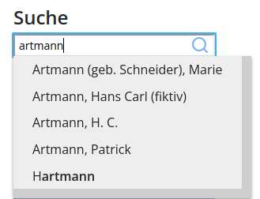
Objektgalerie
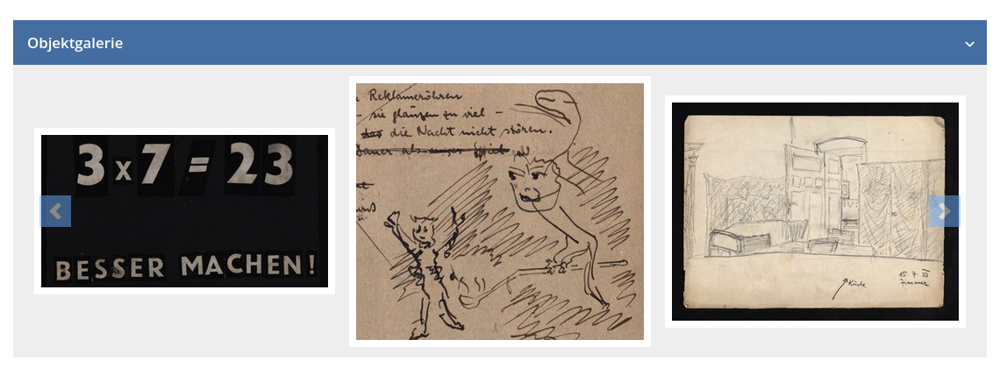
Barrierefreie Nutzung
Die Webseite der digitalen Edition ist in eine Infrastruktur der ÖNB für digitale Editionen eingebettet und ist Teil der Barrierefreiheitserklärung der ÖNB. Die Barrierefreiheit wurde Ende 2020 für einige Seiten in Zusammenarbeit mit Expert:innen analysiert. Ob das Framework für die digitalen Editionen explizit unter diesen Seiten zu finden war, geht aus der Erklärung nicht hervor (vgl. Österreichische Nationalbibliothek 2022). Es ist anzunehmen, dass dies nicht der Fall war, weil beispielsweise kein ausreichender Kontrastwert für die Farbe von Links auf Inhaltsseiten, oder der alphabetischen Auflistung der Einträge in den Registern erreicht wird.5 Für 2022 ist laut der Barrierefreiheitserklärung ein Relaunch der Hauptseite der ÖNB geplant und es bleibt abzuwarten, ob die digitalen Editionen hinsichtlich der Einhaltung der WCAG 2.1 in diesem Rahmen ebenfalls untersucht und gegebenenfalls angepasst werden (vgl. Österreichische Nationalbibliothek 2022).
Mobile Nutzung
Positiv hervorzuheben ist das responsive Verhalten aller Seiten der digitalen Edition, die eine Nutzung auf mobilen Geräten ermöglicht. Nicht nur die Inhaltsseiten sind zugänglich, sondern auch die Tagebücher. Die synoptische Ansicht wechselt zu einer einfachen Ansicht, in der zwischen allen Textvarianten umgeschaltet werden kann. Die Register sind mitsamt der Kartendarstellung ebenso verfügbar.
Wiederverwendung der Ergebnisse
Von großem Nutzen ist das öffentlich zugängliche GitLab Projekt des ÖNB Labs, über das sämtliche Transkriptionsdateien der Tagebücher, aber auch der Register, Themenkommentare, der Biografie und Sekundärliteratur in TEI-XML einzeln oder gesamt direkt heruntergeladen werden können (vgl. Innerhofer u. a. 2019a). Außerdem steht hierüber die Version 1.1 weiterhin bereit, auf die an mehreren Stellen als Archiv verwiesen wird6. Die bereits erwähnte Schemaspezifikation ist ebenfalls im Repository vorhanden und gibt Aufschluss über die genutzten Attribute und deren genaue Verwendung.
Lizenz
Die Gesamtheit der Edition, die Transkriptionen der Tagebücher, die Register und redaktionellen Texte eingeschlossen, stehen für eine Nachnutzung unter einer Creative Commons Attribution-ShareAlike 4.0 International (CC BY-SA 4.0) Lizenz, sofern nicht anders vermerkt. Gesondert genannt sind die Rechte für die digitalen Faksimiles, Fotos und Dokumente von anderen Personen als Okopenko selbst, die den jeweiligen Urheber:innen und Rechtsnachfolger:innen unterliegen. Die digitalen Faksimiles dürfen unter Angabe der Quelle genutzt werden, für die weiteren genannten Dokumente ist keine einfache freie Nutzung möglich (vgl. Innerhofer u. a. 2019d). Die Lizenzangaben hinsichtlich Transkriptionen, Register und redaktioneller Texte spiegeln sich nicht im Repository in GitLab wider. An dieser Stelle ist keine Lizenz vergeben, wodurch genaugenommen all rights reserved gilt und ein Widerspruch zu den Lizenzangaben des Projektes besteht.
Referenzierbarkeit
Jede Seite eines Tagebuchs weist einen Zitiervorschlag auf, der den spezifischen Link zur Tagebuchseite beinhaltet, sich aber ansonsten auf das ganze Tagebuch (und nicht die einzelne Seite) bezieht. Die thematisch einführenden und erläuternden Seiten sowie weitere informative Seiten zum Projekt selbst weisen am Ende des Artikels ebenfalls einen Zitiervorschlag auf. Die Register und ihre Einträge bieten zwar keinen Vorschlag zur Zitation an, sind aber mit Ausnahme des Werkregisters über einen Deeplink abrufbar und referenzierbar. Das Werkregister ist ausschließlich in seiner Gesamtheit durch den Link zitierfähig.
Das Geisteswissenschaftliche Asset Management System (GAMS), das für die
Erstellung der digitalen Edition genutzt wurde (vgl. Innerhofer et al. 2019c), stellt eine
interne Vergabe eines persistenten Identifikators (PID) bereit, durch den ein
Permalink generiert wird. Der interne PID ist in der Schemaspezifikation der
digitalen Edition zu finden und lautet <idno
type="PID">o:oko.odd</idno>. Einen global gültigen PID über das
Handle-Netzwerk7 besitzt die digitale Edition nicht, im Gegensatz zu anderen digitale
Editionen in der GAMS-Infrastruktur. Grundsätzlich ist GAMS an das Handle-Netzwerk
angebunden und betreibt hierfür einen eigenen Server (vgl. Zentrum für Informationsmodellierung – Austrian Centre for
Digital Humanities 2022), sofern dieser mitgenutzt werden könnte.
Technische Schnittstellen
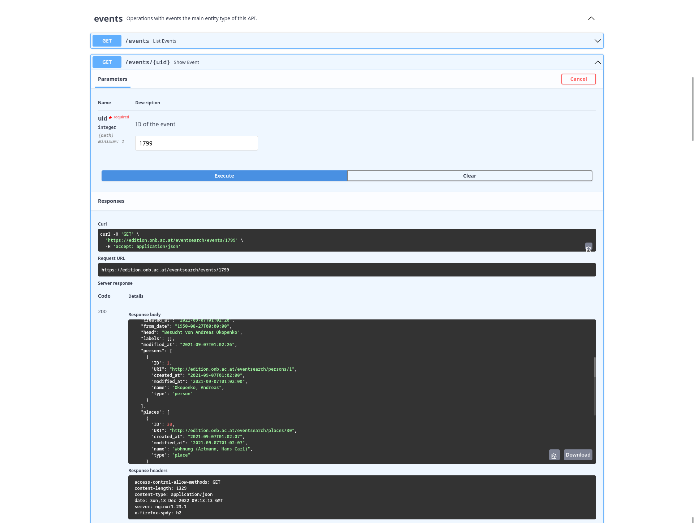subtype="visited" ausgezeichnet sind. Weitere in
Tagebucheinträgen erwähnte und in Registern erfasste Orte, Institutionen, Personen
und Werke sind über die API nicht abrufbar. Die weiteren Endpunkte „persons“,
„places“ und „search“ beziehen sich ausschließlich auf die Informationen, die mit
einem „event“ in Zusammenhang stehen. Die Registerdaten in ihrer Gesamtheit sind
daher nicht vollständig über die API verfügbar. Unter Umständen liefert
beispielsweise die Suche nach einem Ort aus dem Register dennoch ein Ergebnis, das
aber aufgrund der übergreifenden Infrastruktur mit einem „event“ aus einer anderen
digitalen Edition in Zusammenhang stehen kann. Die Abfrage für „events“ unter
Angabe eines Datums oder Datumsbereichs funktioniert derzeit zuverlässig, weil
sich die digitalen Editionen der ÖNB momentan nicht zeitlich überschneiden.
Die Digitalisate sind in das International Image Interoperability Framework (IIIF) eingebunden und über die Image API abrufbar.8
Schlussbemerkung
Die Hybridedition der Tagebücher von Andreas Okopenko verfolgte den Ansatz, basierend auf den XML-Dateien für die digitale Edition eine Druckausgabe zu erstellen. Die digitale Edition war daher vor der Druckausgabe verfügbar, die zum Projektabschluss in Form einer Auswahl-Edition publiziert werden sollte. Irritierend bleibt, weshalb die Druckausgabe einen größeren Zeitraum abdeckt als die digitale Edition. Dennoch ist der hybride Ansatz geglückt und die digitale Edition nützt die Vorteile der Verlinkung innerhalb der Edition und zu externen Ressourcen. Die Weboberfläche ist insgesamt ansprechend, übersichtlich und nutzerfreundlich gestaltet. Besonders positiv anzumerken sind die umfangreichen Möglichkeiten sich den Themen der Tagebücher zu nähern. Sie ermöglichen ein chronologisches Lesen, sowie eine nicht-lineare Erschließung über die Themenkommentare, den Eintrag des Tages und die Objektgalerie, oder sind vollkommen frei über die gut aufbereiteten Register und die Visualisierungen auf der Karte erkundbar.
Der große Mehrwert der Edition liegt in der Aufarbeitung und Bereitstellung der Forschungsdaten als Grundlage für weitere Projekte und Forschungsvorhaben. Die FAIR-Prinzipien sind Großteils berücksichtigt worden, können aber hinsichtlich einiger Details wie durchgängige Lizenzbedingungen und persistente Identifikatoren verbessert werden. Die digitale Edition ist für alle Zielgruppen gleichermaßen einfach auffindbar, beispielsweise über den Katalog von Patrick Sahle, den Catalogue of Digital Editions oder im Katalog der ÖNB, sowie über Suchmaschinen, und ist in allen Teilen frei zugänglich. Die Forschungsdaten sind mit TEI-XML als de facto Standard für digitale Editionen aufbereitet und mit Metadaten angereichert, wodurch die generelle Interoperabilität und Wiederverwendbarkeit sichergestellt sind. Durch die Lizenzbedingungen ist eine Nachnutzung weitgehend zugelassen, lediglich die Angabe im Repository muss angepasst werden, um diese Lizenzbedingungen zu reflektieren. Die Editionsrichtlinien für die Transkriptionen sind transparent, aber die Details zur Erstellung der Registereinträge sind derzeit nur über die Schemaspezifikation auffindbar. Dort sind jedenfalls ausführlich und nachvollziehbar dokumentiert, um mit den Daten arbeiten zu können. Die bereitgestellte EventSearch API ist eine weitere Möglichkeit auf einen Teil der Daten der digitalen Edition zuzugreifen. Eine Erweiterung der Schnittstellen und die vollständige Integration der Registerdaten und Details der Tagebucheinträge würde den vollständigen Zugriff auf die Forschungsdaten mittels API ermöglichen. Ein Hauptpunkt der FAIR-Prinzipien ist die eindeutige und dauerhafte Identifizierbarkeit von Datenobjekten. Diesen Punkt erfüllt die digitale Edition durch den fehlenden persistenten Identifikator, beispielsweise über das Handle-Netzwerk, derzeit nicht.
Einige Stellen der Projektseite verweisen auf eine künftige Version der digitalen Edition, mit der die rezensierte Version 2.0 gemeint sein dürfte, die unter anderem eine Timeline für die Tagebucheinträge und eine Volltextsuche vorsah. Die ÖNB verfügt über einen großen Bestand weiterer Tagebücher der Folgejahre aus Okopenkos Nachlass, die erschlossen und integriert werden könnten. Pläne für eine inhaltliche und funktionale Erweiterung der digitalen Edition scheint es derzeit keine zu geben.
Bibliography
- Herberth, Arno. 2019. „Biographie zu Andreas Okopenko“. Okopenko, Andreas: Tagebücher 1949–1954. Digitale Edition. https://web.archive.org/web/20220816082746/https://edition.onb.ac.at/okopenko/o:oko.biography/methods/sdef:TEI/get?mode=comment.
- Innerhofer, Roland. 2015. „Andreas Okopenko: Tagebücher aus dem Nachlass (Hybridedition). Kurzbeschreibung“. FWF Project Finder. https://web.archive.org/web/20220816081138/https://pf.fwf.ac.at/de/wissenschaft-konkret/project-finder/project_pdfs/pdf_abstracts/p28344d.pdf
- Innerhofer, Roland, Bernhard Fetz, Christian Zolles, Laura Tezarek, Arno Herberth, Desiree Hebenstreit, und Holger Englerth. 2019a. „Benutzungshinweise zur Digitalen Edition der Tagebücher aus dem Nachlass von Andreas Okopenko“. Okopenko, Andreas: Tagebücher 1949–1954. Digitale Edition. https://web.archive.org/web/20220816081639/https://edition.onb.ac.at/okopenko/o:oko.help/methods/sdef:TEI/get?mode=info
- Innerhofer, Roland, Bernhard Fetz, Christian Zolles, Laura Tezarek, Arno Herberth, Desiree Hebenstreit, und Holger Englerth. 2019b. „Editionsrichtlinien zur Digitalen Edition der Tagebücher aus dem Nachlass von Andreas Okopenko“. Okopenko, Andreas: Tagebücher 1949–1954. Digitale Edition. https://web.archive.org/web/20220816081958/https://edition.onb.ac.at/okopenko/o:oko.editionguidelines/methods/sdef:TEI/get?mode=info
- Innerhofer, Roland, Bernhard Fetz, Christian Zolles, Laura Tezarek, Arno Herberth, Desiree Hebenstreit, und Holger Englerth. 2019c. „Einleitung zur Digitalen Edition der Tagebücher aus dem Nachlass von Andreas Okopenko“. Okopenko, Andreas: Tagebücher 1949–1954. Digitale Edition. https://web.archive.org/web/20220816082045/https://edition.onb.ac.at/okopenko/o:oko.introduction/methods/sdef:TEI/get?mode=info
- Innerhofer, Roland, Bernhard Fetz, Christian Zolles, Laura Tezarek, Arno Herberth, Desiree Hebenstreit, und Holger Englerth. 2019d. „Kurzbesschreibung der Lizenzen der Bestandteile der Digitalen Edition der Tagebücher aus dem Nachlass von Andreas Okopenko“. Okopenko, Andreas: Tagebücher 1949–1954. Digitale Edition. https://web.archive.org/web/20220816082927/https://edition.onb.ac.at/okopenko/o:oko.licences/methods/sdef:TEI/get?mode=info
- Innerhofer, Roland, Bernhard Fetz, Christian Zolles, Laura Tezarek, Arno Herberth, Desiree Hebenstreit, und Holger Englerth. 2019e. „Überblick zu den Studierendenprojekten im Rahmen der Digitalen Edition der Tagebücher von Andreas Okopenko“. Okopenko, Andreas: Tagebücher 1949–1954. Digitale Edition. https://web.archive.org/web/20220816133142/https://edition.onb.ac.at/okopenko/o:oko.introduction-sp/methods/sdef:TEI/get
- Österreichische Nationalbibliothek. 2022. „Barrierefreiheitserklärung – Österreichische Nationalbibliothek“. https://web.archive.org/web/20220816093513/https://www.onb.ac.at/barrierefreiheitserklaerung
- Zentrum für Informationsmodellierung – Austrian Centre for Digital Humanities. 2022. „GAMS: Geisteswissenschaftliches Asset Management System“. https://web.archive.org/web/20220816094846/https://gams.uni-graz.at/context:gams?mode=about&locale=de
Notes
- Siehe Okopenko, Andreas. 2020. Tagebücher aus dem Nachlass (1945 bis 1955). Klever Essay. Wien: Klever. ↑
- Detaillierte Informationen zu den FAIR-Prinzipien sind unter https://web.archive.org/web/20230213030518/https://force11.org/info/the-fair-data-principles/ einsehbar. Besonders für diese Rezension relevant ist die Zusammenfassung unter https://web.archive.org/web/20230120155729/https://ride.i-d-e.de/fair-criteria-editions/. ↑
- Ein Beispiel dazu ist im Tagebucheintrag vom 07.08.1950 ersichtlich unter https://web.archive.org/web/20220816091420/https://edition.onb.ac.at/okopenko/o:oko.tb-19500801-19500831/methods/sdef:TEI/get?mode=p_11 ↑
- Der entsprechende Bereich ist unter https://web.archive.org/web/20220816092553/https://labs.onb.ac.at/gitlab/digital-editions/okopenko-public/-/blob/master/Schema/Schema_Okopenko.xml#L2948 zu finden. Besonders relevant sind die subtype-Elemente. ↑
- Für einen kurzen Überblick hinsichtlich der Barrierefreiheit einer Webseite, kann das Browser-Addon WAVE installiert werden, das Webseiten etwas genauer beleuchten kann. Die Browser-Extension ist verfügbar unter https://web.archive.org/web/20230218115632/https://wave.webaim.org/extension/. ↑
- Für Version 1.1 siehe https://labs.onb.ac.at/gitlab/digital-editions/okopenko-public/-/tree/v1.1 (zuletzt aufgerufen am 15.02.2023). ↑
- Eine gute Übersicht zu unterschiedlichen Systemen bietet die TIB – Leibniz-Informationszentrum Technik und Naturwissenschaften und Universitätsbibliothek https://web.archive.org/web/20220816094914/https://projects.tib.eu/pid-service/persistent-identifiers/persistent-identifiers-pids/ ↑
- Die ÖNB bietet hierzu eine Dokumentation unter https://web.archive.org/web/20221209221107/http://iiif.onb.ac.at/. ↑
@article{okopenko,
author = {Manninger, Kerstin},
title = {Die Tagebücher von Andreas Okopenko (1949–1954)},
journal = {RIDE – A review journal for digital editions and resources},
number = {17},
year = {2023},
doi = {10.18716/ride.a.17.1},
url = {https://doi.org/10.18716/ride.a.17.1},
}TY - JOUR
AU - Manninger, Kerstin
TI - Die Tagebücher von Andreas Okopenko (1949–1954)
T2 - RIDE – A review journal for digital editions and resources
IS - 17
PY - 2023
DA - 2023/04
DO - 10.18716/ride.a.17.1
UR - https://doi.org/10.18716/ride.a.17.1
PB - Institut für Dokumentologie und Editorik e.V.
LA - de
ER - Manninger, K. (2023). Die Tagebücher von Andreas Okopenko (1949–1954). RIDE – A review journal for digital editions and resources, (17). https://doi.org/10.18716/ride.a.17.1Manninger, Kerstin. "Die Tagebücher von Andreas Okopenko (1949–1954)." RIDE – A review journal for digital editions and resources, no. 17, 2023. https://doi.org/10.18716/ride.a.17.1.Manninger, Kerstin. "Die Tagebücher von Andreas Okopenko (1949–1954)." RIDE – A review journal for digital editions and resources, no. 17 (2023). https://doi.org/10.18716/ride.a.17.1.